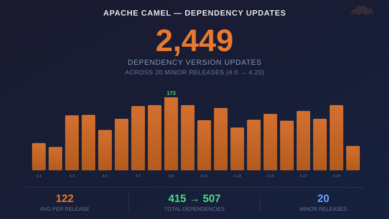

Every Apache Camel release ships new features and bug fixes — and those get the headlines. But behind every release there is a quieter effort that rarely gets mentioned: keeping 500+ third-party dependencies current.
We compared the parent/pom.xml across every Camel 4.x minor release — from 4.0.0 to 4.20.0 — and counted every dependency version that changed. Here is what we found.
2,449 dependency updates across 20 releases
Every minor release updates a significant portion of the dependency tree. The average is 122 dependency version updates per release — roughly a quarter of all managed dependencies.
| Release | Date | Updated | Added | Removed | Total Deps |
|---|---|---|---|---|---|
| 4.0.0 → 4.1.0 | Oct 2023 | 65 | 2 | 4 | 413 |
| 4.1.0 → 4.2.0 | Nov 2023 | 55 | 3 | 1 | 415 |
| 4.2.0 → 4.3.0 | Dec 2023 | 130 | 0 | 0 | 415 |
| 4.3.0 → 4.4.0 | Feb 2024 | 132 | 8 | 2 | 421 |
| 4.4.0 → 4.5.0 | Mar 2024 | 96 | 7 | 1 | 427 |
| 4.5.0 → 4.6.0 | May 2024 | 122 | 3 | 2 | 428 |
| 4.6.0 → 4.7.0 | Jul 2024 | 152 | 5 | 4 | 429 |
| 4.7.0 → 4.8.0 | Sep 2024 | 154 | 7 | 0 | 436 |
| 4.8.0 → 4.9.0 | Nov 2024 | 173 | 20 | 3 | 453 |
| 4.9.0 → 4.10.0 | Feb 2025 | 155 | 3 | 5 | 451 |
| 4.10.0 → 4.11.0 | Mar 2025 | 119 | 11 | 4 | 458 |
| 4.11.0 → 4.12.0 | May 2025 | 148 | 6 | 1 | 463 |
| 4.12.0 → 4.13.0 | Jul 2025 | 102 | 7 | 2 | 468 |
| 4.13.0 → 4.14.0 | Aug 2025 | 120 | 2 | 0 | 470 |
| 4.14.0 → 4.15.0 | Oct 2025 | 134 | 5 | 1 | 474 |
| 4.15.0 → 4.16.0 | Nov 2025 | 117 | 6 | 0 | 480 |
| 4.16.0 → 4.17.0 | Jan 2026 | 141 | 11 | 1 | 490 |
| 4.17.0 → 4.18.0 | Feb 2026 | 122 | 5 | 0 | 495 |
| 4.18.0 → 4.19.0 | Apr 2026 | 154 | 15 | 4 | 506 |
| 4.19.0 → 4.20.0 | Apr 2026 | 58 | 1 | 0 | 507 |
| Total | 2,449 | 127 | 35 |
The 4.8.0 → 4.9.0 release had the highest activity: 173 updated and 20 added — reflecting the wave of new AI and cloud connectors entering the project during that period.
The dependency footprint grew 22%
Camel 4.0.0 managed 415 third-party dependency versions. By 4.20.0 that number is 507 — a 22% increase across 20 releases. That growth comes from new connectors (AI, MCP, document processing, cloud services) each bringing their own dependency trees.
The net growth of 92 dependencies (127 added, 35 removed) shows the community also prunes — replacing deprecated libraries, consolidating duplicates, and dropping abandoned projects.
LTS patch branches: manual, targeted updates
The minor release numbers tell one story. The LTS patch branches tell another — and in some ways a more impressive one.
Apache Camel maintains multiple Long-Term Support (LTS) release lines simultaneously, each receiving patch releases for approximately one year. On these branches, dependency updates are not bulk upgrades — they are deliberate, targeted changes: CVE fixes, Spring Boot patch release alignments, and known dependency bug fixes that affect users. None of this is automated. Every update is hand-picked, reviewed, and tested.
Here is the full LTS patch history for Camel 4.x:
4.0.x LTS (6 patch releases)
| Release | Date | Updated |
|---|---|---|
| 4.0.0 → 4.0.1 | Sep 2023 | 11 |
| 4.0.1 → 4.0.2 | Oct 2023 | 19 |
| 4.0.2 → 4.0.3 | Nov 2023 | 4 |
| 4.0.3 → 4.0.4 | Jan 2024 | 8 |
| 4.0.4 → 4.0.5 | Apr 2024 | 10 |
| 4.0.5 → 4.0.6 | Aug 2024 | 5 |
| Total | 57 |
4.4.x LTS (5 patch releases)
| Release | Date | Updated |
|---|---|---|
| 4.4.0 → 4.4.1 | Mar 2024 | 8 |
| 4.4.1 → 4.4.2 | Apr 2024 | 8 |
| 4.4.2 → 4.4.3 | Jun 2024 | 24 |
| 4.4.3 → 4.4.4 | Oct 2024 | 34 |
| 4.4.4 → 4.4.5 | Jan 2025 | 13 |
| Total | 87 |
4.8.x LTS (9 patch releases)
| Release | Date | Updated |
|---|---|---|
| 4.8.0 → 4.8.1 | Oct 2024 | 16 |
| 4.8.1 → 4.8.2 | Dec 2024 | 15 |
| 4.8.2 → 4.8.3 | Jan 2025 | 13 |
| 4.8.3 → 4.8.4 | Feb 2025 | 11 |
| 4.8.4 → 4.8.5 | Mar 2025 | 0 |
| 4.8.5 → 4.8.6 | Mar 2025 | 11 |
| 4.8.6 → 4.8.7 | May 2025 | 6 |
| 4.8.7 → 4.8.8 | Jun 2025 | 11 |
| 4.8.8 → 4.8.9 | Sep 2025 | 0 |
| Total | 83 |
4.10.x LTS (9 patch releases)
| Release | Date | Updated |
|---|---|---|
| 4.10.0 → 4.10.1 | Feb 2025 | 10 |
| 4.10.1 → 4.10.2 | Mar 2025 | 3 |
| 4.10.2 → 4.10.3 | Mar 2025 | 9 |
| 4.10.3 → 4.10.4 | Apr 2025 | 14 |
| 4.10.4 → 4.10.5 | May 2025 | 13 |
| 4.10.5 → 4.10.6 | Jun 2025 | 10 |
| 4.10.6 → 4.10.7 | Sep 2025 | 20 |
| 4.10.7 → 4.10.8 | Dec 2025 | 18 |
| 4.10.8 → 4.10.9 | Feb 2026 | 7 |
| Total | 104 |
4.14.x LTS (7 patch releases, active)
| Release | Date | Updated |
|---|---|---|
| 4.14.0 → 4.14.1 | Sep 2025 | 11 |
| 4.14.1 → 4.14.2 | Oct 2025 | 20 |
| 4.14.2 → 4.14.3 | Dec 2025 | 7 |
| 4.14.3 → 4.14.4 | Jan 2026 | 8 |
| 4.14.4 → 4.14.5 | Feb 2026 | 3 |
| 4.14.5 → 4.14.6 | Apr 2026 | 30 |
| 4.14.6 → 4.14.7 | Apr 2026 | 0 |
| Total | 79 |
4.18.x LTS (2 patch releases, active)
| Release | Date | Updated |
|---|---|---|
| 4.18.0 → 4.18.1 | Mar 2026 | 23 |
| 4.18.1 → 4.18.2 | Apr 2026 | 8 |
| Total | 31 |
LTS totals
Across all six LTS lines: 441 targeted dependency updates in 38 patch releases — every single one reviewed and tested manually.
These are not the broad sweeps of a minor release where everything gets bumped. These are selective, risk-aware updates where the maintainers evaluate each change: does this CVE affect Camel? Does this Spring Boot patch break compatibility? Is this dependency bug worth the risk of updating on a stable branch?
Why this matters
Outdated dependencies are the most common source of security vulnerabilities in Java projects. Every CVE in a transitive dependency is a potential exposure for every user. When the Log4Shell vulnerability hit in December 2021, projects that had fallen behind on dependency updates faced emergency scrambles. Projects that kept current were patched within days.
Camel’s approach is systematic: dependencies are updated every release cycle, not in occasional bulk upgrades. This means:
- Security patches land quickly. When a dependency publishes a CVE fix, it typically reaches the next Camel release — not months later.
- No big-bang upgrades. Updating 120 dependencies every 6–8 weeks is manageable. Updating 400 dependencies after a year of neglect is not.
- Compatibility stays tested. Each incremental update gets the full test suite — 22,000 test files across 350+ connectors.
The invisible maintenance tax
These 2,890 updates — 2,449 on minor releases plus 441 hand-picked patches on LTS branches — don’t show up in release notes. They don’t get conference talks. They are the kind of work that only gets noticed when it stops happening — when a downstream user runs a security scan and discovers they’re three versions behind on a library with a known CVE.
For a framework that manages 500+ dependencies across 350+ connectors, keeping the dependency tree current is a substantial, ongoing commitment. It is also one of the most important things the Apache Camel community does.
The data is public
All numbers in this post were computed by comparing the parent/pom.xml across git tags in the Apache Camel repository. The parent/pom.xml file contains all managed dependency versions for the project — anyone can reproduce these numbers with git show <tag>:parent/pom.xml and a diff.